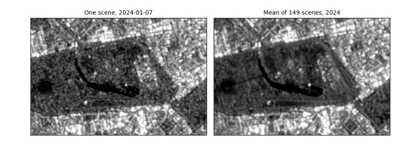
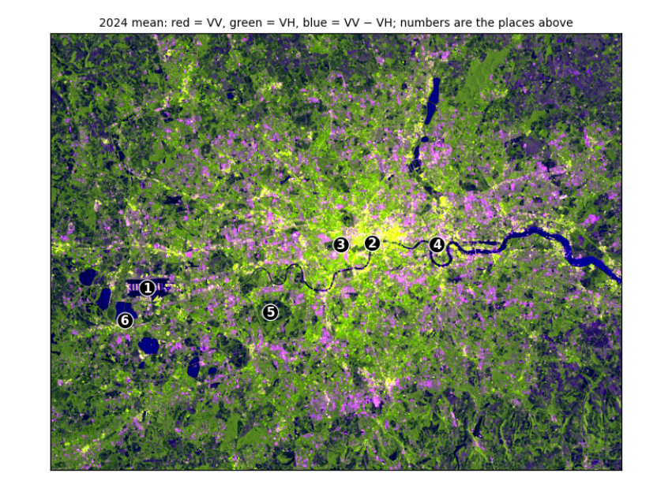

3. Reading London¶
London has every kind of surface radar sees: water, parks, an airport and dense towers. Here we measure speckle and use the two polarisations to tell these surfaces apart.
3.1 Speckle: why one image is noisy¶
Each radar pixel adds up echoes from many small scatterers within it. They interfere, sometimes adding and sometimes cancelling, so even a uniform field shows a grainy pattern called speckle. It is not noise in the instrument; it is part of how coherent radar works. Averaging many images (or many neighbouring pixels) reduces it. The equivalent number of looks (ENL) measures how smooth a uniform area is: ENL = mean² / variance of the linear values. One raw Sentinel-1 image has an ENL of about 4–5; averaging n independent images multiplies it by about n.
with rasterio.open(DATA / "london_single_vv_10m.tif") as src:
one = src.read(1)
stats_l = json.loads((DATA / "london_stats.json").read_text())
def block_enl(img_db, k=8):
"""ENL = mean² / variance of linear values, in every k x k block of pixels."""
lin = 10 ** (img_db / 10)
h, w = lin.shape[0] // k * k, lin.shape[1] // k * k
b = lin[:h, :w].reshape(h // k, k, w // k, k).transpose(0, 2, 1, 3).reshape(-1, k * k)
b = b[np.isfinite(b).all(axis=1)]
return b.mean(axis=1) ** 2 / b.var(axis=1)
## ENL only means something in uniform areas, so use the most uniform blocks: the top 10% of block ENL values
e_one, e_mean = np.percentile(block_enl(one), 90), np.percentile(block_enl(vv), 90)
print(f"ENL in the most uniform 80 m blocks: one scene {e_one:.1f}, mean of {stats_l['nScenesLondon']} scenes {e_mean:.1f} "
f"({e_mean / e_one:.1f} times smoother)")
print(f"(the manual, over a uniform area: ENL {stats_l['enlOne']} for one scene, {stats_l['enlMany']} for the mean)")
lon, lat = -0.165, 51.507 # Hyde Park, for the zoom below
x, y = reproject_points("EPSG:4326", london_crs, [lon], [lat])
row, col = rasterio.transform.rowcol(london_transform, x[0], y[0])
fig, axes = plt.subplots(1, 2, figsize=(8, 3.6))
zoom = (slice(row - 100, row + 100), slice(col - 150, col + 150))
show(one[zoom], axes[0], f"One scene, {stats_l['sceneDate']}")
show(vv[zoom], axes[1], f"Mean of {stats_l['nScenesLondon']} scenes, 2024")
plt.tight_layout(); plt.show()
ENL in the most uniform 80 m blocks: one scene 4.5, mean of 149 scenes 8.8 (1.9 times smoother)
(the manual, over a uniform area: ENL 4.4 for one scene, 20.9 for the mean)

How to read the figure. Both panels show the same 2 km × 3 km around Hyde Park with the same stretch. On the left, one image: grainy, so single pixels cannot be trusted. On the right, the mean of a year: the speckle has averaged out and paths, the lake and building edges are clear. The printed ENL says the same in numbers: in the most uniform blocks, the year's mean is about twice as smooth as one scene. That is far less than 149 scenes might suggest, for two reasons: central London has few truly uniform areas, so even the "most uniform" blocks contain real variation; and scenes taken from the same orbit are not independent views. Over a uniform field the manual measured a much larger gain. What it means in practice: compare averages of several images, or average neighbouring pixels, before drawing conclusions from single pixels; that costs time resolution or spatial detail.
3.2 Polarisation: VV, VH and their difference¶
Sentinel-1 sends vertically polarised pulses and records two returns. VV (vertical in, vertical out) is strong from surfaces and corners. VH (vertical in, horizontal out) needs the wave's polarisation to be twisted, which happens mostly through repeated scattering inside volumes such as tree canopies and crops. So VV − VH (in dB) is small for vegetation (a lot of twisted return) and large for smooth surfaces and buildings.
with rasterio.open(DATA / "london_2024_mean_80m.tif") as src:
vv80, vh80, ratio80 = src.read()
t80 = src.transform
places = [("Heathrow Airport", -0.46, 51.47), ("River Thames, central London", -0.118, 51.508), ("Hyde Park", -0.165, 51.507),
("Canary Wharf", -0.02, 51.505), ("Richmond Park", -0.275, 51.445), ("Reservoir south-west of Heathrow", -0.495, 51.44)]
xs, ys = reproject_points("EPSG:4326", london_crs, [p[1] for p in places], [p[2] for p in places])
def place_mean(img_db, r, c, k=1):
"""Mean of a (2k+1) x (2k+1) window around a pixel, in linear units, back in dB: one pixel can land on a pond or a path."""
w = img_db[r - k:r + k + 1, c - k:c + k + 1]
return 10 * np.log10(np.nanmean(10 ** (w / 10)))
rows_ = []
for (name, _, _), xx, yy in zip(places, xs, ys):
r, c = rasterio.transform.rowcol(t80, xx, yy)
v, h = place_mean(vv80, r, c), place_mean(vh80, r, c)
rows_.append((name, v, h, v - h))
print(f"{'place (240 m window)':34s} {'VV dB':>7s} {'VH dB':>7s} {'VV-VH':>6s}")
for name, v, h, d in rows_:
print(f"{name:34s} {v:7.1f} {h:7.1f} {d:6.1f}")
print("\nbrightest VV:", max(rows_, key=lambda r: r[1])[0], "| darkest VV:", min(rows_, key=lambda r: r[1])[0],
"| smallest VV-VH (most vegetation-like):", min(rows_, key=lambda r: r[3])[0])
def scale(a):
lo, hi = np.nanpercentile(a, [2, 98]); return np.clip((a - lo) / (hi - lo), 0, 1)
rgb = np.dstack([scale(vv80), scale(vh80), scale(ratio80)])
fig, ax = plt.subplots(figsize=(7, 5.3))
ax.imshow(rgb); ax.set_xticks([]); ax.set_yticks([])
for k, ((name, _, _), xx, yy) in enumerate(zip(places, xs, ys), 1):
r, c = rasterio.transform.rowcol(t80, xx, yy)
ax.annotate(str(k), (c, r), color="white", fontsize=10, ha="center", va="center", fontweight="bold",
bbox=dict(boxstyle="circle,pad=0.15", fc="black", ec="white", lw=0.8))
ax.set_title("2024 mean: red = VV, green = VH, blue = VV − VH; numbers are the places above", fontsize=9)
plt.tight_layout(); plt.show()
place (240 m window) VV dB VH dB VV-VH
Heathrow Airport 9.5 -1.4 10.9
River Thames, central London -9.2 -15.8 6.6
Hyde Park -6.9 -14.0 7.1
Canary Wharf 13.9 4.6 9.3
Richmond Park -12.1 -18.1 6.0
Reservoir south-west of Heathrow -12.8 -22.0 9.3
brightest VV: Canary Wharf | darkest VV: Reservoir south-west of Heathrow | smallest VV-VH (most vegetation-like): Richmond Park

How to read the table. Each row is one place; the columns are the mean VV and VH backscatter in dB and their difference, each averaged over a 240 m window (in linear units) because a single pixel can fall on a pond or a path. Compare rows rather than reading single numbers: the line under the table names the brightest and darkest place and the one with the smallest VV − VH. Expect open water to be darkest, dense buildings and the airport's hard surfaces and hangars brightest, and vegetated parks to have the smallest difference, because their canopies twist the polarisation. Where a place does not fit (a park reading as dark as water), look at the image: its window may include a lake.
How to read the false-colour image. Each colour channel shows one band, stretched from its darkest 2% to its brightest 2%: red is VV, green is VH, blue is VV − VH. Colours mix as on a screen, so read them by asking which bands are high. Dark blue (the Thames, the reservoirs): VV and VH both very low but their difference large, the signature of smooth water. Green (parks, fields, woods): relatively strong VH, the twisted return from vegetation. Yellow to white (central London, Canary Wharf): VV and VH both high, from building corners and clutter. Purple to pink: high VV with a large difference, typical of smooth hard surfaces and buildings facing the satellite, such as runways and warehouses. The numbered circles are the six places in the table.